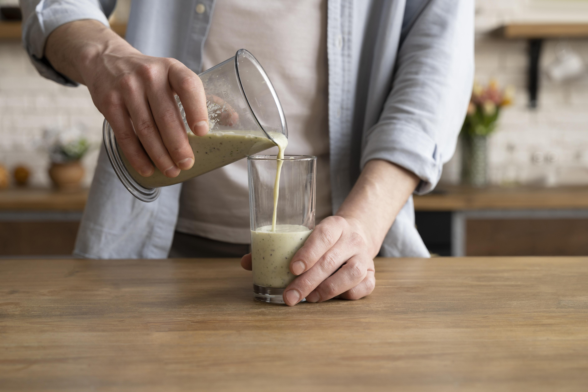
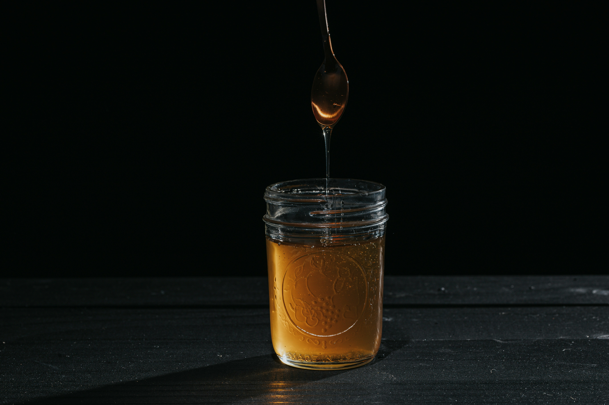

The next important concept to remember is smoothie proportions. The ideal smoothie is 2 parts fruit/vegetable, 1 part liquid, and half part thickener. This is how you get the texture of a smoothie most are familiar with. If you like your smoothie thicker, you can add more thickener, and more liquid if you like it thinner. It depends on what you prefer in a smoothie. Adding fruits and vegetables to your smoothies is based on your preferences in taste. This is where most of the flavor comes in and you'll have lots of freedom to choose what flavor you want in your smoothie. Flavor also doesn't strictly come from fruits and vegetables, you can also add nuts, honey, spices, and other ingredients you think will enhance the flavor of your smoothie. To re-iterate, the flavor of your smoothie is based on what you put into it. It also determine the nutritional value of your smoothie based on the fruits and vegetables you add .


Here are some potential ingredients you can put in your smoothies. For the liquid componet, any popular beverage for consumption can be used. Some examples include but not limited to: water, milk, juice, almond milk, coconut milk, and almond milk. Any cold beverage would work. Your choice of liquid depends on your tastes. For your thickener, it's important to choose flavors that are not overwheleming that envelop the flavor of the smoothie. Some potential choices of thickener include, peanut butter, greek yogurt, honey, or syrup. Basically anything ingredient that can create a thick consistency. Remember not to add too much. Ice can also be a good thickener too. Finally the fruits and vegetables. You can add all fruits, all veggies, or a mix of both. If you are working with fruits, it's best to blend them frozen instead of fresh. This is because it's tougher to puree them when fresh and the water content in fruits expands when frozen. Frozen fruits will give you more liquid consistency. Additionally you can add other ingredients such as crackers, chocolate, spices, and other food to flavor your smoothie. Your only limit is your imagination, and if it's edible. Try mix and matching different combanations of smoothies to figure out what tastes best for you,
